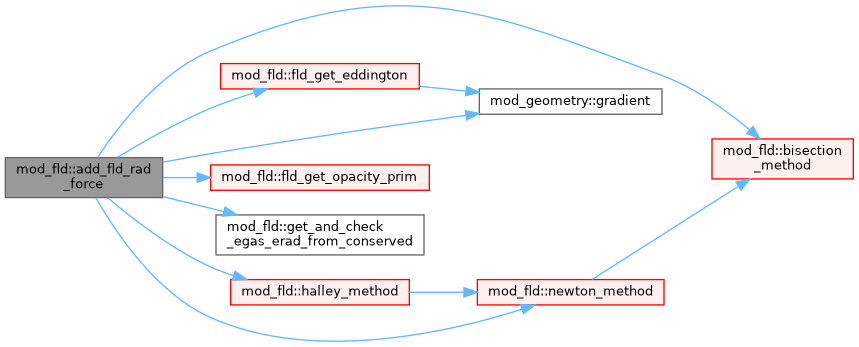
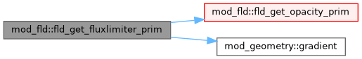
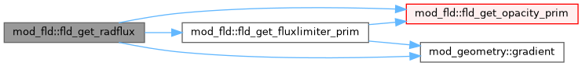

Module for flux limited diffusion (FLD)-approximation in Radiation-(Magneto)hydrodynamics simulations. More...
Functions/Subroutines | |
| subroutine | fld_params_read (files) |
| public methods these are called in mod_hd_phys or mod_mhd_phys | |
| subroutine, public | fld_init (r_gamma) |
| Initialising FLD-module Read opacities Initialise Multigrid and adimensionalise kappa. | |
| subroutine | fld_set_mg_bounds |
| Set the boundaries for the diffusion of E. | |
| subroutine, public | add_fld_rad_force (qdt, ixil, ixol, wct, wctprim, w, x, qsourcesplit, active) |
| w[iw]=w[iw]+qdt*S[wCT,qtC,x] where S is the source based on wCT within ixO This subroutine handles the radiation force and its work added explicitly and the energy interaction term combined with photon tiring using an implicit update | |
| subroutine, public | fld_radforce_get_dt (w, ixil, ixol, dtnew, dxd, x) |
| get dt limit for radiation force and FLD explicit source additions NOTE: w is primitive on entry | |
| subroutine, public | fld_get_opacity_prim (w, x, ixil, ixol, fld_kappa) |
| Sets the opacity in the w-array by calling mod_opal_opacity NOTE: assumes primitives in w NOTE: assuming opacity is local, not ok with cak line force. | |
| subroutine, public | fld_get_radpress (w, x, ixil, ixol, rad_pressure) |
| Returns Radiation Pressure as tensor NOTE: w is primitive on entry. | |
| subroutine, public | fld_get_fluxlimiter (w, x, ixil, ixol, fld_lambda, fld_r, nth) |
| This subroutine calculates flux limiter lambda according to fld_fluxlimiter It also calculates fld_R which is ratio of radiation scaleheight and mean free path NOTE: nth and ixI and ixO not free to choose here: TODO. | |
| subroutine, public | fld_get_fluxlimiter_prim (w, x, ixil, ixol, fld_lambda, fld_r, nth) |
| This subroutine calculates flux limiter lambda according to fld_fluxlimiter It also calculates fld_R which is ratio of radiation scaleheight and mean free path NOTE: this one operates on primitives NOTE: nth and ixI and ixO not free to choose. | |
| subroutine, public | fld_get_radflux (w, x, ixil, ixol, rad_flux) |
| Calculate Radiation Flux NOTE: only for diagnostics purposes (w conservative on entry) This returns cell centered values for radiation flux. | |
| subroutine | fld_get_eddington (w, x, ixil, ixol, eddington_tensor, lambda, fld_r, nth) |
| Calculate Eddington-tensor (where w is primitive) also feeds back the flux limiter lambda and R. | |
| subroutine | get_and_check_egas_erad_from_conserved (w, ixil, ixol, e_gas, e_rad) |
| subroutine | fld_implicit_update (dtfactor, qdt, qtc, psa, psb) |
| Calling all subroutines to perform the multigrid method Communicates rad_e and diff_coeff to multigrid library Advance psa=psb+dtfactor*qdt*F_im(psa) | |
| subroutine | update_diffcoeff (psa) |
| subroutine | fld_evaluate_implicit (qtc, psa) |
| inplace update of psa==>F_im(psa) | |
| subroutine | evaluate_diffterm_onegrid (ixil, ixol, w, x) |
| inplace update of psa==>F_im(psa) | |
| subroutine, public | fld_get_diffcoef_central (w, x, ixil, ixol) |
| Calculates cell-centered diffusion coefficient to be used in multigrid. | |
| subroutine | bisection_method (e_gas, c0, c1) |
| Find the root of the 4th degree polynomial using the bisection method. | |
| subroutine | newton_method (e_gas, c0, c1) |
| Find the root of the 4th degree polynomial using the Newton method. | |
| subroutine | halley_method (e_gas, c0, c1) |
| Find the root of the 4th degree polynomial using the Halley method. | |
| double precision function | polynomial_bisection (e_gas, c0, c1) |
| Evaluate polynomial at argument e_gas. | |
| double precision function | dpolynomial_bisection (e_gas, c0, c1) |
| Evaluate first derivative of polynomial at argument e_gas. | |
| double precision function | ddpolynomial_bisection (e_gas, c0, c1) |
| Evaluate second derivative of polynomial at argument e_gas. | |
Variables | |
| logical | fld_radforce_split = .false. |
| source split for energy interact and radforce: | |
| logical | fld_tiring_explicit = .false. |
| switch to handle photon tiring explicit or implicit | |
| double precision, public | fld_kappa0 = 0.0d0 |
| Opacity value when using constant opacity. | |
| double precision, public | fld_bisect_tol = 1.d-4 |
| Tolerance for bisection method for Energy sourceterms This is a percentage of the minimum of gas- and radiation energy. | |
| double precision, public | fld_diff_tol = 1.d-4 |
| Tolerance for radiative Energy diffusion. | |
| logical | fld_slowsteps = .false. |
| handling ramp-up phase with explicit diffusion dt limit, slowly boosted | |
| double precision, public | fld_boost_dt = 0.0d0 |
| logical | fld_force_mg_converged = .true. |
| switches for local debug purposes | |
| logical | fld_debug |
| logical | fld_no_mg |
| character(len=40) | fld_opacity_law = 'const' |
| switches for opacity | |
| character(len=40) | fld_opal_table = 'Y09800' |
| character(len=40) | fld_fluxlimiter = 'Pomraning' |
| flux limiter choice | |
| integer | i_diff_mg |
| diffusion coefficient for multigrid method | |
| integer | nth_for_diff_mg |
| diffusion coefficient stencil control | |
| character(len=40) | fld_interaction_method = 'Halley' |
| Which method to find the root for the energy interaction polynomial. | |
| double precision, public | fld_gamma |
| A copy of (m)hd_gamma. | |
Detailed Description
Module for flux limited diffusion (FLD)-approximation in Radiation-(Magneto)hydrodynamics simulations.
Full description of RHD-FLD in Moens N., Sundqvist J.O., El Mellah I., Poniatowski L., Teunissen J. & Keppens R. 2022, A&A 657, A81 Radiation-hydrodynamics with MPI-AMRVAC . Flux-limited diffusion doi:10.1051/0004-6361/202141023
Full description for RMHD-FLD in N. Narechania, R. Keppens, A. ud-Doula, N. Moens & J. Sundqvist 2025, A&A 696, A131 doi:10.1051/0004-6361/202452208 Radiation-magnetohydrodynamics with MPI-AMRVAC using flux-limited diffusion
Function/Subroutine Documentation
◆ add_fld_rad_force()
| subroutine, public mod_fld::add_fld_rad_force | ( | double precision, intent(in) | qdt, |
| integer, intent(in) | ixi, | ||
| integer, intent(in) | l, | ||
| integer, intent(in) | ixo, | ||
| l, | |||
| double precision, dimension(ixi^s,1:nw), intent(in) | wct, | ||
| double precision, dimension(ixi^s,1:nw), intent(in) | wctprim, | ||
| double precision, dimension(ixi^s,1:nw), intent(inout) | w, | ||
| double precision, dimension(ixi^s,1:ndim), intent(in) | x, | ||
| logical, intent(in) | qsourcesplit, | ||
| logical, intent(inout) | active | ||
| ) |
w[iw]=w[iw]+qdt*S[wCT,qtC,x] where S is the source based on wCT within ixO This subroutine handles the radiation force and its work added explicitly and the energy interaction term combined with photon tiring using an implicit update
Calculate and add sourceterms
Photon tiring : calculate tensor grad v (named div_v here)
Momentum equation source term
Energy equation source term
photon tiring when handled explicitly
Coefficients for the polynomial in Moens et al. 2022, eq 37. but with photon tiring (a3)
Loop over every cell for rootfinding method
Update gas-energy in w, internal + kinetic
Update rad-energy in w
Definition at line 196 of file mod_fld.t.

◆ bisection_method()
| subroutine mod_fld::bisection_method | ( | double precision, intent(inout) | e_gas, |
| double precision, intent(in) | c0, | ||
| double precision, intent(in) | c1 | ||
| ) |
◆ ddpolynomial_bisection()
| double precision function mod_fld::ddpolynomial_bisection | ( | double precision, intent(in) | e_gas, |
| double precision, intent(in) | c0, | ||
| double precision, intent(in) | c1 | ||
| ) |
◆ dpolynomial_bisection()
| double precision function mod_fld::dpolynomial_bisection | ( | double precision, intent(in) | e_gas, |
| double precision, intent(in) | c0, | ||
| double precision, intent(in) | c1 | ||
| ) |
◆ evaluate_diffterm_onegrid()
| subroutine mod_fld::evaluate_diffterm_onegrid | ( | integer, intent(in) | ixi, |
| integer, intent(in) | l, | ||
| integer, intent(in) | ixo, | ||
| l, | |||
| double precision, dimension(ixi^s, 1:nw), intent(inout) | w, | ||
| double precision, dimension(ixi^s, 1:ndim), intent(in) | x | ||
| ) |
◆ fld_evaluate_implicit()
| subroutine mod_fld::fld_evaluate_implicit | ( | double precision, intent(in) | qtc, |
| type(state), dimension(max_blocks), target | psa | ||
| ) |
◆ fld_get_diffcoef_central()
| subroutine, public mod_fld::fld_get_diffcoef_central | ( | double precision, dimension(ixi^s,1:nw), intent(inout) | w, |
| double precision, dimension(ixi^s,1:ndim), intent(in) | x, | ||
| integer, intent(in) | ixi, | ||
| integer, intent(in) | l, | ||
| integer, intent(in) | ixo, | ||
| l | |||
| ) |
◆ fld_get_eddington()
| subroutine mod_fld::fld_get_eddington | ( | double precision, dimension(ixi^s, 1:nw), intent(in) | w, |
| double precision, dimension(ixi^s, 1:ndim), intent(in) | x, | ||
| integer, intent(in) | ixi, | ||
| integer, intent(in) | l, | ||
| integer, intent(in) | ixo, | ||
| l, | |||
| double precision, dimension(ixi^s,1:ndim,1:ndim), intent(out) | eddington_tensor, | ||
| double precision, dimension(ixi^s), intent(out) | lambda, | ||
| double precision, dimension(ixi^s), intent(out) | fld_r, | ||
| integer, intent(in) | nth | ||
| ) |
◆ fld_get_fluxlimiter()
| subroutine, public mod_fld::fld_get_fluxlimiter | ( | double precision, dimension(ixi^s,1:nw), intent(in) | w, |
| double precision, dimension(ixi^s,1:ndim), intent(in) | x, | ||
| integer, intent(in) | ixi, | ||
| integer, intent(in) | l, | ||
| integer, intent(in) | ixo, | ||
| l, | |||
| double precision, dimension(ixi^s), intent(out) | fld_lambda, | ||
| double precision, dimension(ixi^s), intent(out) | fld_r, | ||
| integer, intent(in) | nth | ||
| ) |
This subroutine calculates flux limiter lambda according to fld_fluxlimiter It also calculates fld_R which is ratio of radiation scaleheight and mean free path NOTE: nth and ixI and ixO not free to choose here: TODO.
Definition at line 508 of file mod_fld.t.

◆ fld_get_fluxlimiter_prim()
| subroutine, public mod_fld::fld_get_fluxlimiter_prim | ( | double precision, dimension(ixi^s,1:nw), intent(in) | w, |
| double precision, dimension(ixi^s,1:ndim), intent(in) | x, | ||
| integer, intent(in) | ixi, | ||
| integer, intent(in) | l, | ||
| integer, intent(in) | ixo, | ||
| l, | |||
| double precision, dimension(ixi^s), intent(out) | fld_lambda, | ||
| double precision, dimension(ixi^s), intent(out) | fld_r, | ||
| integer, intent(in) | nth | ||
| ) |
This subroutine calculates flux limiter lambda according to fld_fluxlimiter It also calculates fld_R which is ratio of radiation scaleheight and mean free path NOTE: this one operates on primitives NOTE: nth and ixI and ixO not free to choose.
Definition at line 530 of file mod_fld.t.

◆ fld_get_opacity_prim()
| subroutine, public mod_fld::fld_get_opacity_prim | ( | double precision, dimension(ixi^s, 1:nw), intent(in) | w, |
| double precision, dimension(ixi^s, 1:ndim), intent(in) | x, | ||
| integer, intent(in) | ixi, | ||
| integer, intent(in) | l, | ||
| integer, intent(in) | ixo, | ||
| l, | |||
| double precision, dimension(ixi^s), intent(out) | fld_kappa | ||
| ) |
Sets the opacity in the w-array by calling mod_opal_opacity NOTE: assumes primitives in w NOTE: assuming opacity is local, not ok with cak line force.
Definition at line 436 of file mod_fld.t.
◆ fld_get_radflux()
| subroutine, public mod_fld::fld_get_radflux | ( | double precision, dimension(ixi^s, 1:nw), intent(in) | w, |
| double precision, dimension(ixi^s, 1:ndim), intent(in) | x, | ||
| integer, intent(in) | ixi, | ||
| integer, intent(in) | l, | ||
| integer, intent(in) | ixo, | ||
| l, | |||
| double precision, dimension(ixi^s, 1:ndim), intent(out) | rad_flux | ||
| ) |
Calculate Radiation Flux NOTE: only for diagnostics purposes (w conservative on entry) This returns cell centered values for radiation flux.
Calculate the Flux using the fld closure relation F = -c*lambda/(kappa*rho) *grad E
Definition at line 612 of file mod_fld.t.

◆ fld_get_radpress()
| subroutine, public mod_fld::fld_get_radpress | ( | double precision, dimension(ixi^s, 1:nw), intent(in) | w, |
| double precision, dimension(ixi^s, 1:ndim), intent(in) | x, | ||
| integer, intent(in) | ixi, | ||
| integer, intent(in) | l, | ||
| integer, intent(in) | ixo, | ||
| l, | |||
| double precision, dimension(ixi^s,1:ndim,1:ndim), intent(out) | rad_pressure | ||
| ) |

◆ fld_implicit_update()

◆ fld_init()
| subroutine, public mod_fld::fld_init | ( | double precision, intent(in) | r_gamma | ) |
◆ fld_params_read()
| subroutine mod_fld::fld_params_read | ( | character(len=*), dimension(:), intent(in) | files | ) |
public methods these are called in mod_hd_phys or mod_mhd_phys
Reading in fld-list parameters from .par file
◆ fld_radforce_get_dt()
| subroutine, public mod_fld::fld_radforce_get_dt | ( | double precision, dimension(ixi^s,1:nw), intent(in) | w, |
| integer, intent(in) | ixi, | ||
| integer, intent(in) | l, | ||
| integer, intent(in) | ixo, | ||
| l, | |||
| double precision, intent(inout) | dtnew, | ||
| double precision, intent(in) | dx, | ||
| double precision, intent(in) | d, | ||
| double precision, dimension(ixi^s,1:ndim), intent(in) | x | ||
| ) |

◆ fld_set_mg_bounds()
| subroutine mod_fld::fld_set_mg_bounds |
◆ get_and_check_egas_erad_from_conserved()
| subroutine mod_fld::get_and_check_egas_erad_from_conserved | ( | double precision, dimension(ixi^s, 1:nw), intent(in) | w, |
| integer, intent(in) | ixi, | ||
| integer, intent(in) | l, | ||
| integer, intent(in) | ixo, | ||
| l, | |||
| double precision, dimension(ixi^s), intent(out) | e_gas, | ||
| double precision, dimension(ixi^s), intent(out) | e_rad | ||
| ) |
◆ halley_method()
| subroutine mod_fld::halley_method | ( | double precision, intent(inout) | e_gas, |
| double precision, intent(in) | c0, | ||
| double precision, intent(in) | c1 | ||
| ) |
◆ newton_method()
| subroutine mod_fld::newton_method | ( | double precision, intent(inout) | e_gas, |
| double precision, intent(in) | c0, | ||
| double precision, intent(in) | c1 | ||
| ) |
◆ polynomial_bisection()
| double precision function mod_fld::polynomial_bisection | ( | double precision, intent(in) | e_gas, |
| double precision, intent(in) | c0, | ||
| double precision, intent(in) | c1 | ||
| ) |
◆ update_diffcoeff()
| subroutine mod_fld::update_diffcoeff | ( | type(state), dimension(max_blocks), target | psa | ) |

Variable Documentation
◆ fld_bisect_tol
| double precision, public mod_fld::fld_bisect_tol = 1.d-4 |
◆ fld_boost_dt
◆ fld_debug
◆ fld_diff_tol
| double precision, public mod_fld::fld_diff_tol = 1.d-4 |
◆ fld_fluxlimiter
| character(len=40) mod_fld::fld_fluxlimiter = 'Pomraning' |
◆ fld_force_mg_converged
| logical mod_fld::fld_force_mg_converged = .true. |
◆ fld_gamma
| double precision, public mod_fld::fld_gamma |
◆ fld_interaction_method
| character(len=40) mod_fld::fld_interaction_method = 'Halley' |
◆ fld_kappa0
| double precision, public mod_fld::fld_kappa0 = 0.0d0 |
◆ fld_no_mg
◆ fld_opacity_law
| character(len=40) mod_fld::fld_opacity_law = 'const' |
◆ fld_opal_table
◆ fld_radforce_split
| logical mod_fld::fld_radforce_split = .false. |
◆ fld_slowsteps
| logical mod_fld::fld_slowsteps = .false. |
◆ fld_tiring_explicit
| logical mod_fld::fld_tiring_explicit = .false. |
◆ i_diff_mg
| integer mod_fld::i_diff_mg |